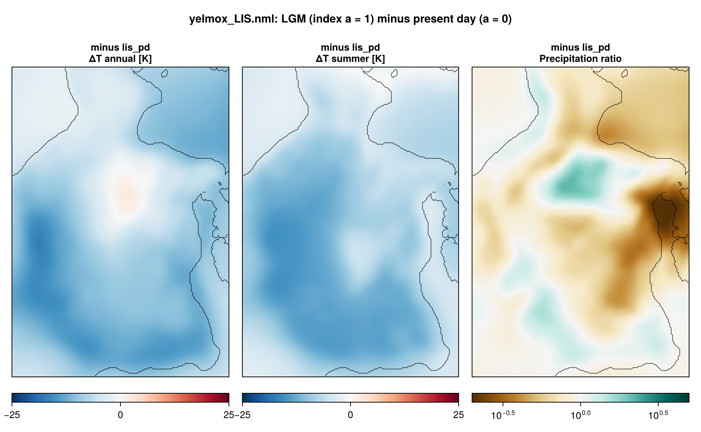
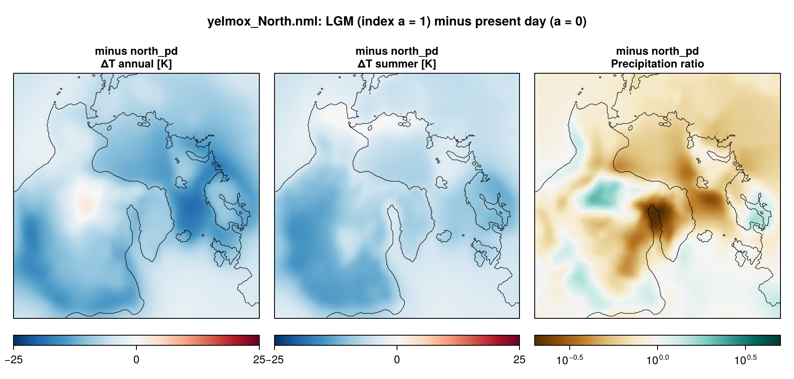

Laurentide LGM
North American ice sheets in a steady Last Glacial Maximum climate, at 32 km, on two domains: Laurentide (LIS-32KM) and the Northern Hemisphere North (NH-32KM). Both start cold from the ICE-6G_C ice over North America and hold the climate at the LGM position of a glacial index. They differ in the surface mass balance: smb_simple on a target ice mask (Laurentide), chion PDD (North).
- Program:
yelmox(make yelmox) with the snapshot backend ([comps] climate = "snapshots", see Snapshots). - Config:
yelmox/yelmox_LIS.nml,yelmox/yelmox_North.nml. - Scripts:
scripts/run_lis_smbsimple.sh(Laurentide).
Running
Run from the yelmox root. Laurentide, test runs and (optionally) ensembles:
scripts/run_lis_smbsimple.shRUN_ENSEMBLES=1 scripts/run_lis_smbsimple.shNorth:
runme -rs -q 12h -w 10:00:00 -e yelmox -n yelmox/yelmox_North.nml -o output/northrun_lis_smbsimple.sh submits two 30-kyr runs (ctrl.time_end = 30e3) to tmp/lischeck/<date>/: lgm-test (ctrl.tstep_const = -21e3, smb_simple.mask_idx = 18, the LGM mask) and mis3-test (-35e3, mask_idx = 16, the 35 ka mask). RUN_ENSEMBLES=1 adds lgm-ens and mis3-ens, 9 members each: ytill.cf_ref = 0.05, 0.1, 0.2 times smb_simple.a1 = 3700, 3900, 4100 m (with ytill.scale_zb = 2, z0 = -100, z1 = 200, yhyd.till_delta = 0.1). RUNOPT holds the runme options (default -rs -q 12h -w 10:00:00); the North command uses the same.
Timeline
[ctrl]0 to 50 kyr (Laurentide) or 100 kyr (North),dtt = 10yr, forcing time held at the LGM (tstep_method = "const",tstep_const = -21e3);[comps] dt_clim = dt_isos = 10yr.- Present-day orbit (
[orbit] method = "time",time = 0); sea level from the model’s own ice ([barysealevel] method = "fastiso"). - No relaxation or optimization (
[sim] relax = False,opt = False). - Output: 1D every 1 yr, small 2D every 50 yr, 2D every 5 kyr (Laurentide) or 200 yr (North), restart bundles every 20 kyr and at the end.
Climate
The reference pd plus the term glacial ([term_glacial], picontrol -> lgm on tas and pr): ERA5 1981–2010 plus the PMIP3 LGM – piControl anomaly, additive for the temperature, as a ratio for the precipitation. The PMIP3 snapshots are annual and JJA means (monthly = False), smoothed over 50 km (clim_sigma). The series is constant at the LGM (the par file redefines [series_glacial] as method = "const", f_min = 1), so the climate does not depend on the forcing time. The ocean is ORAS5 1981–2010 plus the term ocean, 0.25 times the mean sea-level air temperature anomaly over the domain (the derived series dTo, region = "all").


Initial state
Cold start ([ctrl] restart = "None") from a reconstruction ([sim] init_method = "recon"): the ice thickness recon_var = "dz" of recon_path = "ice_data/{domain}/{grid_name}/{grid_name}_TOPO-ICE-6G_C.nc" at the slice nearest to recon_time = -26e3 (26 ka, the first slice), imposed where recon_regions = "region:North_America" selects and the bed is above -500 m. The imposed ice is smoothed (Gaussian, 2 dx), floating ice thinner than 50 m is removed, and the result becomes the reference thickness H_ice_ref; the dynamics are then stabilized for 200 yr with beta_min = 100 Pa a m-1 (domain_init_recon, libs/kryos_startup.f90). Elsewhere the ice is the present-day ice of [topo].
Where ice may grow ([yelmo_masks] mask_ice_dynamic): Laurentide excludes Greenland ("~region:Greenland") and has no ice on the domain border ([yelmo] mask_border = "none"); North excludes the open ocean ("~zone:open_ocean"), with the border of the "auto" default (no ice on the border for the domain North).
Surface mass balance
Laurentide, [comps] surface_method = "smb_simple", synthetic-elevation scheme ([smb_simple] scheme = "syn", libs/smb_simple.f90). The SMB is evaluated on a synthetic surface elevation built from the distance to the margin of a target ice mask (plastic profile inside, tau0 = 36 kPa):
smb = acc - abl, acc = c0 exp(-d_in/L_acc), abl = beta (z_SL - z) (z < z_SL)
z_SL = a1 + a2 phi, beta = beta0 + beta1 (phiref - phi)with c0 = 300 mm w.e./yr, L_acc = 300 km, a1 = 3900 m, a2 = -50 m/degN, beta0 = 5 (mm/yr)/m at phiref = 60 degN, beta1 = 0.05. Outside the mask the SMB is at most smb_min = -2000 mm w.e./yr. The mask is ice_data/{domain}/{grid_name}/{grid_name}_Batchelor2019_ice_masks.nc ({grid_name} = grid_surface: LIS-32KM), slice mask_idx = 18 (LGM; 14–17: 45, 40, 35, 30 ka). The climate enters only through the sea-level air temperature: t_srf = t_sl - gamma_t z_syn (gamma_t = 6.5e-3 K/m), capped at 273.15 K inside the mask.
North, chion PDD ([chion] model = "pdd", [pdd_chion], pdd_method = "cg05"), monthly temperature and precipitation of the climate; [surface_chion] time_equil = 100 yr of snowpack spin-up at the cold start.
Configuration
| Laurentide | North | |
|---|---|---|
| Grids | LIS-32KM for every component (153 x 219) |
NH-32KM for every component (276 x 276) |
| Topography | GEBCO 2026 (TOPO-GEBCO2026, FesmData) with z_bed_sd |
GEBCO 2026, without z_bed_sd |
Reference climate (snapshot_pd) |
ERA5 1981–2010; ocean ORAS5 1981–2010 | same |
Snapshots (snapshot_picontrol, snapshot_lgm) |
PMIP3 ensemble means, global (GLOBAL-1DEG, remapped; atmosphere only) |
same |
| Surface mass balance | smb_simple, Batchelor2019 LGM mask |
chion PDD |
| Shelf melt | bmb_method = "anom", tf_method = 2 |
same |
| Calving | calv_flt_method = "vm-m16", level set |
same |
| Dynamics | DIVA | DIVA |
| Basal friction | cb_ref from the bed elevation ([ytill] method = 1, cf_ref = 0.1), linear between z0 = -500 and z1 = 300 m |
exponential between z0 = -100 and z1 = 100 m |
| Sediments | SED-M23 (ice_data) |
Sediment-CRUST1 (FesmData) |
| Geothermal heat flux | GHF-Shapiro2004 |
same |
| Isostasy | FastIsostasy LV-ELVA, uniform mantle (1e21 Pa s), lithosphere thickness LIS-32KM_GEO-P22.nc |
LV-ELVA, uniform mantle and lithosphere (88 km) |
| Named regions | Hudson (region:Hudson_Bay_and_Strait, yelmo_ts_Hudson.nc) |
none |